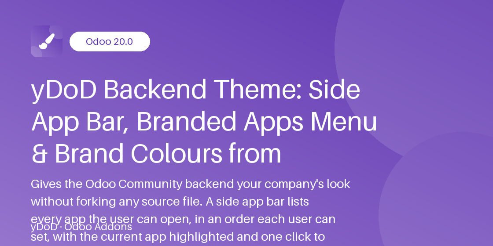

Related Modules
Work even better together with yDoD apps for Odoo 20.0.
A side app bar, a branded full-window apps menu, your brand colours and your favicon — set from General Settings, with no forked theme to maintain.
Odoo 20.0 Community & Enterprise

In standard Odoo Community, switching from Sales to Contacts means opening the apps dropdown every time, and changing the backend colours means editing SCSS files that conflict with every upgrade. yDoD Backend Theme puts every app the user may open in a bar down the side of every screen, opens the apps menu full-window over your company's own background, and lets an administrator pick the brand, primary and context colours in General Settings.
The colours are compiled into a generated SCSS asset registered through ir.asset, so no module file is ever edited and upgrades have nothing to merge. A single Reset to Defaults button brings back the standard Odoo palette.
Built for companies, Odoo integrators and in-house IT teams running Odoo who want faster app switching and a backend in their own brand colours without maintaining a forked theme.
Every app the user's access rights allow, one click away from any screen, with the current app highlighted.
Each user arranges the apps in their own order, saved on their user and restored at every login.
Expanded with names, icons only or hidden, chosen by each user in My Preferences.
The apps grid opens below the navbar over a company background image or fallback colour.
Brand, primary, success, info, warning and danger, plus the bar's background, text and active colours.
Colours live in a generated SCSS attachment loaded through ir.asset, never in a module file.
Upload an .ico, .png or .svg icon per company; the browser tab follows the active company.
Depends only on base_setup and web, no external libraries or services, LGPL-3.
Clicking the apps icon of the navbar or the All Apps button opens a grid of every app over the whole window, below the navbar. The background is the Apps Menu Background image of the active company, or its Apps Menu Colour when no image is uploaded. Press Esc or pick an app to close it.
#714B67; an empty colour keeps the Odoo default.ir.asset replace rule; the stylesheet is rebuilt only when a colour really changed. The new palette shows after a reload.Each company has a Backend Theme tab on its form with the apps menu background image, the fallback colour and the Favicon. The favicon accepts .ico, .png and .svg files only, and its detected type is shown on the form. The browser tab and the apps menu follow the company selected in the company switcher, while colours apply to the whole database.
No. Colours are picked in General Settings and written to a generated attachment loaded through ir.asset. Save, reload the page, and the new palette is active.
Only users with the Role / Administrator group can open the Backend Theme settings and use Reset to Defaults. Every internal user can change their own app bar mode and app order, and nobody else's.
Yes. The apps menu background, fallback colour and favicon are stored per company and follow the active company; the colour palette applies to the whole database.
Exactly the apps of the standard apps menu: those the user's access rights allow. New apps appear automatically at the end of a personal order.
The uninstall removes the generated stylesheet, its asset rule and the colour parameters, so the backend returns to the standard Odoo look. No business data is touched.
No. It depends only on the Odoo modules base_setup and web and runs entirely inside your Odoo.
Need help with setup, a custom palette or a tailored backend feature? yDoD is happy to help.
https://profile.dodyakj.online
yDoD — Dody Ahmad Kusuma Jaya
Work even better together with yDoD apps for Odoo 20.0.